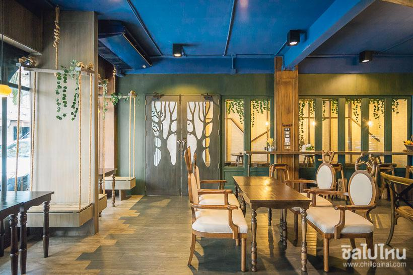
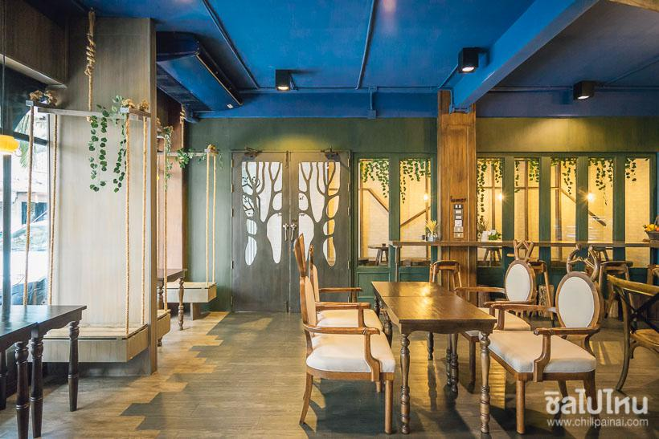

5 จุดเช็คอินหน้าฝน กินเที่ยวแบบชุ่มฉ่ำ ชิลได้แม้ในวันฝนพรำ

1. จิบกาแฟ ชมงานคราฟต์ ที่ Blue Dye Café ทองหล่อ
ไม่ใช่แค่เป็นย่านเก๋ๆ และสวรรค์ของนักท่องราตรี แต่ละแวกแถวทองหล่อยังมีคาเฟ่เท่ๆ ที่มีงานศิลปะสุดเจ๋งซ่อนตัวอยู่นั่นคือ “Blue Dye Café” คาเฟ่หลังเล็กใจกลางซอยสุขุมวิท 36 มานั่งละเลียดจิบกาแฟในบรรยากาศบ้านสีขาวหลังเล็กแสนสงบล้อมรอบไปด้วยกระจกใส

2. ท่องโลกแห่งเทพนิยายเช้าจรดค่ำที่ Into the Woods
ที่นี่เป็นเหมือนกับโอเอซิสสำหรับคนที่อยากหลบความวุ่นวายของกรุงเทพฯ ทิ้งโลกแห่งความเป็นจริงชั่วคราวแล้วก้าวเท้าเข้าสู่ดินแดนโลกแห่งเทพนิยายกับ “Into the Woods” คาเฟ่แห่งจินตนาการที่ซ่อนกิมมิคตัวละครในเทพนิยายไว้ในการตกแต่งได้อย่างน่าค้นหา
 

3. ดื่มด่ำกับสายฝนสีชมพูสุดโรแมนติกที่ Pinkplanter
“Pinkplanter” คาเฟ่น่ารักที่มีทั้งมุมถ่ายรูป รวมถึงขนมหน้าตาน่ากินทั้งนั้น รับรองว่าสาวๆ ต้องถูกใจแน่นอนที่สำคัญทำเลที่ตั้งของร้านยังอยู่ใจกลางย่านสยามสแควร์

4. พักผ่อนในบ้านกลางน้ำที่ The RAFT Kanchanaburi
พักผ่อนชิลๆ ในบ้านกลางน้ำที่ The RAFT Kanchanaburi ที่พักสไตล์บ้านพักแพกลางน้ำแบบส่วนตัว ท่ามกลางบรรยากาศธรรมชาติของเขื่อนศรีนครินทร์สามารถตื่นมาชมวิวได้แบบพาโนราม่า หรือจะโดดเล่นน้ำจากหน้าห้องพักก็ได้เลย ก่อนตกค่ำจะปาร์ตี้บาร์บีคิวชิลๆกันท่ามกลางบรรยากาศของฝนปรอยๆ โดยมีสายน้ำและขุนเขาที่ล้อมรอบสุดสายตา
5. นอนชิลริมแม่น้ำแควที่ริเวอร์แคววิลเลจ กาญจนบุรี
นอกจากจะมีห้องพักให้เลือกหลากหลาย ทั้งแพริมน้ำ ห้องพักวิวภูเขาบนตึก ฯลฯ ยังมีกิจกรรมแอดเวนเจอร์มันส์ๆ ทั้งปีนหน้าผาจำลอง ล่องแพเปียก ขี่รถตีนตะขาบ DTV เข้ากับบรรยากาศลุยๆ ช่วงหน้าฝนแบบนี้